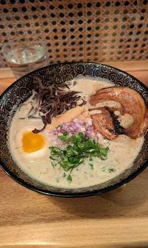

Ramen Restaurant in Berkeley
Tsuruya
This ramen has great broth. It is the one of the best spots to enjoy authentic hakata noodles in the Bay Area.

This is the way to organize the element without using relative or absolute positioning.
I used "flex display" in the CSS style and adjust this element into the center position by aligning it on the center.
This ramen has great broth. It is the one of the best spots to enjoy authentic hakata noodles in the Bay Area.
